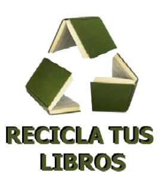

Bienvenido a la web del Institut Camí de Mar
El Institut Camí de Mar es un centro de titularidad pública dependiendo del Departamento de Educación ubicado en Calafell. Con más de tres décadas de historia. Es un centro con la mirada puesta en el futuro y en el mundo, líder en proyectos e innovador en pedagogías; un centro inclusivo, plural y coeducativo, bien cohesionado, con tolerancia cero en cuanto a acoso escolar, comprometido socialmente y con el medio ambiente, y con la aspiración de ser un modelo de convivencia y participación. En 2007 el centro recibe el premio de Educación de Cataluña y en 2008 el premio Baldiri Reixach por un proyecto teatral. Durante los últimos cursos hemos elaborado varios proyectos de innovación. Destacamos, por ejemplo, el de biblioteca e impulso de la lectura, mediación escolar, robótica, tutoría entre iguales, hábitos de vida saludable, Escuelas Verdes, Erasmus + y actividades internacionales o Brigada Z, por citar algunos. Los grandes objetivos de centro para el período 2018/22 son:
- Mejorar el rendimiento y de los resultados educativos.
- Impulso del conocimiento y el uso de las lenguas entrangeras.
- Mejora de la cohesión social.
- Facilitar la inserción social y laboral.
- Favorecer un buen clima de tabajo.
- Potenciar una buena imagen del centro.
- Potenciar una bona imatge del centre.
El instituto Camí de Mar forma parte del proyecto de reciclaje/reutilizacion de libros del Ayuntamiento de Calafell.
